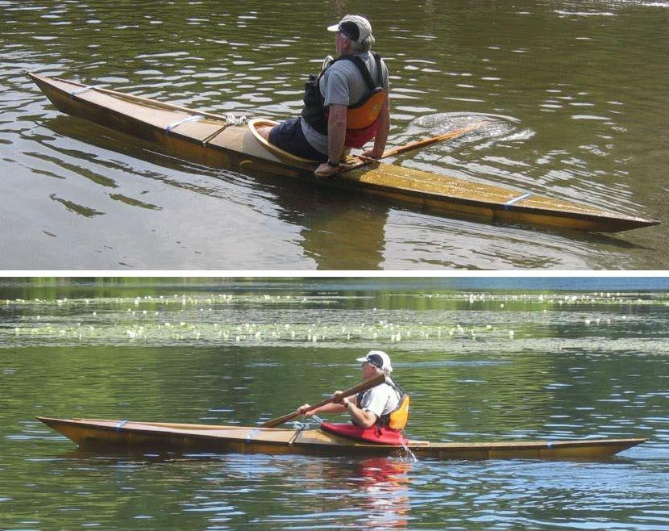

| (New) Sea Cruiser by Scott Holmen (US) | Menu Previous Page Next Page |
|

Scott has just completed a wood frame Sea Cruiser. The 17ft X 22in kayak weighs 26lbs. The stringers are Western Red Cedar and the coss sections are plywood. Use the {Back} key to return.
|
|